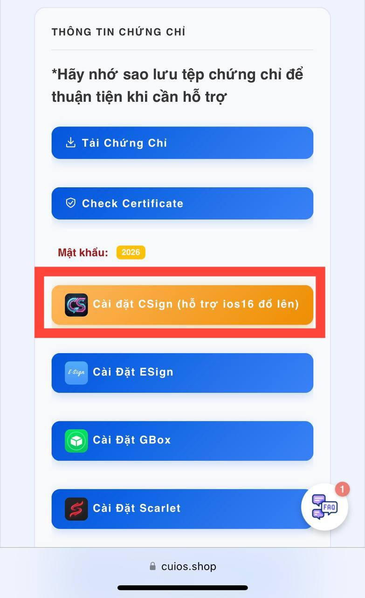

Hướng dẫn dành cho CSign
Chứng chỉ có sẵn · Nguồn IPA trong app · Hỗ trợ iOS 16 trở lên
Cài về có thể bắt đầu dùng
Bản CSign theo thông báo đã được chuẩn bị để sử dụng thuận tiện.
Chứng chỉ đã có sẵn
Không cần tải và nhập chứng chỉ thủ công.
Nguồn IPA trong ứng dụng
Có thể tải xuống và ký ngay trong app.
Có hướng dẫn sử dụng
Mở Cài đặt → HDSD ngay trong CSign để xem thao tác.
Cài đặt và sử dụng
Mở đơn tại trang Nhận Hàng
Sau khi đơn có chứng chỉ, nhập UDID hoặc mã đơn của bạn rồi bấm Kiểm Tra trên cuios.shop.
Chọn đúng nút Cài đặt CSign
Tìm biểu tượng CS màu xanh hồng trên nền tối, như ảnh minh họa. Bấm nút CSign và hoàn tất yêu cầu cài đặt của iOS.
Mở CSign để bắt đầu
Theo thông báo trên kênh, bản CSign này đã có chứng chỉ sẵn; bạn không cần nhập thủ công như khi dùng ESign.
Sử dụng nguồn IPA có sẵn
Bạn có thể tải xuống và ký ứng dụng từ nguồn IPA trong CSign. Theo dõi hướng dẫn bên trong app cho từng thao tác.
Xem hướng dẫn ngay trong app
Mở Cài đặt → HDSD trong CSign. Bạn cũng có thể cài cả ESign nếu muốn; không bắt buộc phải dùng cả hai.
Theo bài Telegram, người mới nên ưu tiên CSign; người đã quen ESign vẫn có thể tiếp tục dùng ESign hoặc cài cả hai. Mục này chỉ trình bày cách dùng CSign.

Cần hỗ trợ khi cài đặt?
Gửi bước bạn đang thực hiện và ảnh thông báo lỗi để được hỗ trợ.